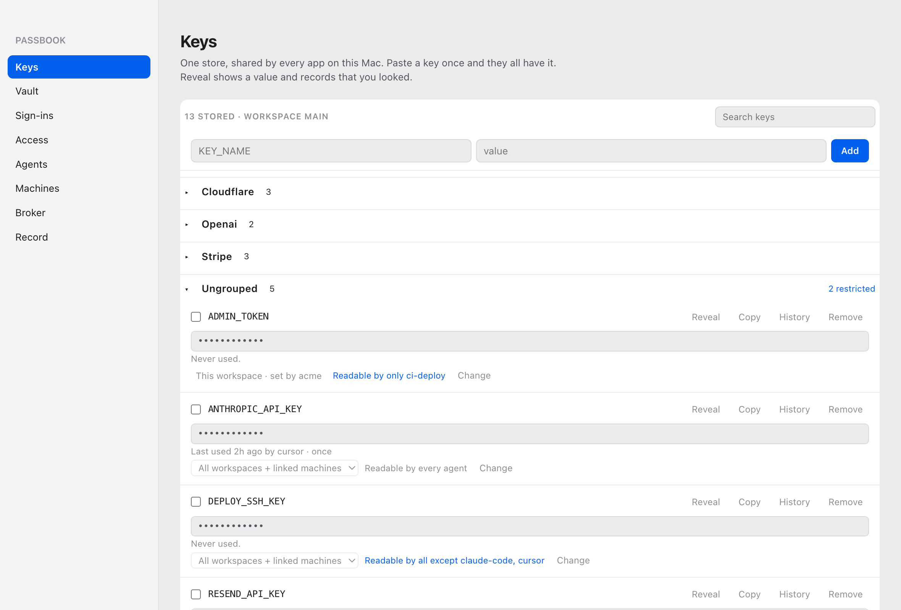
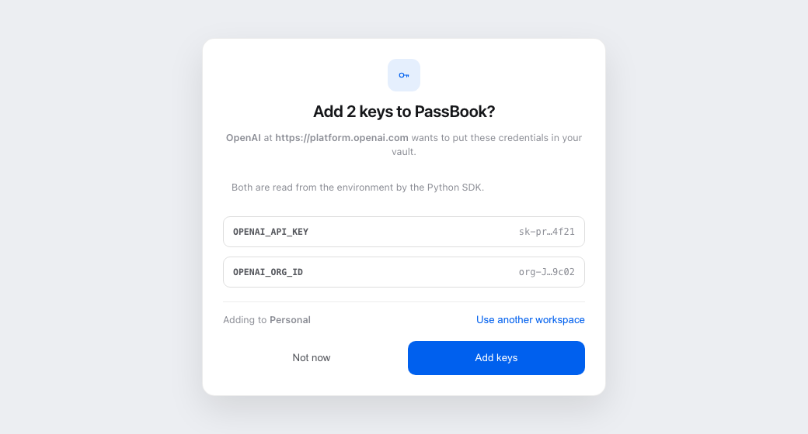
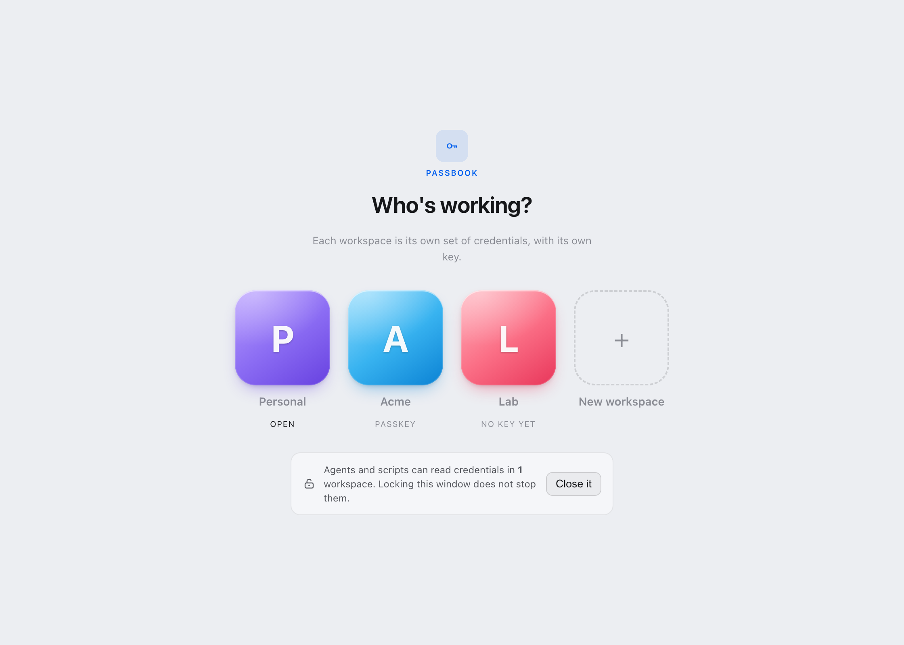
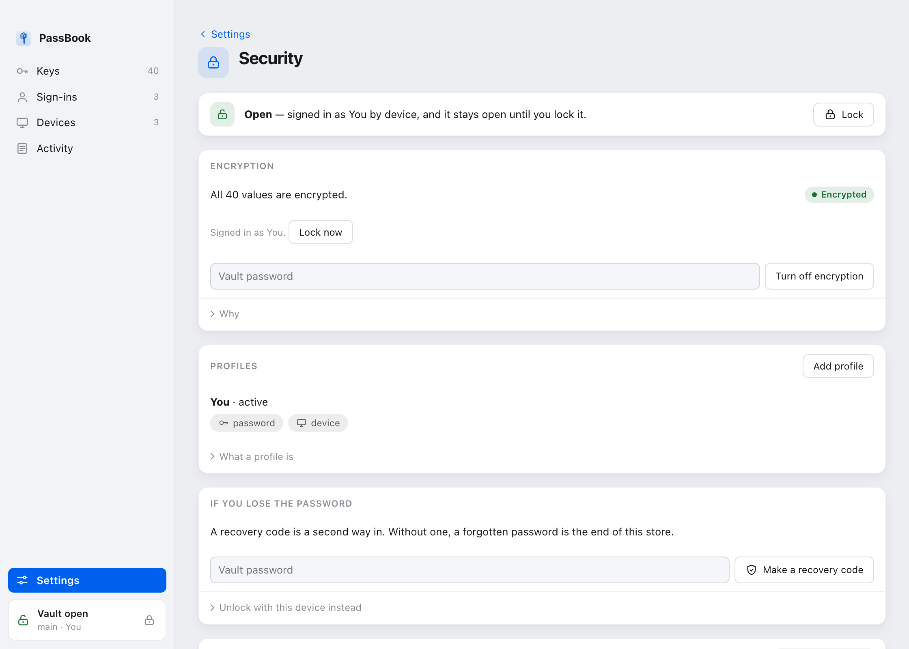
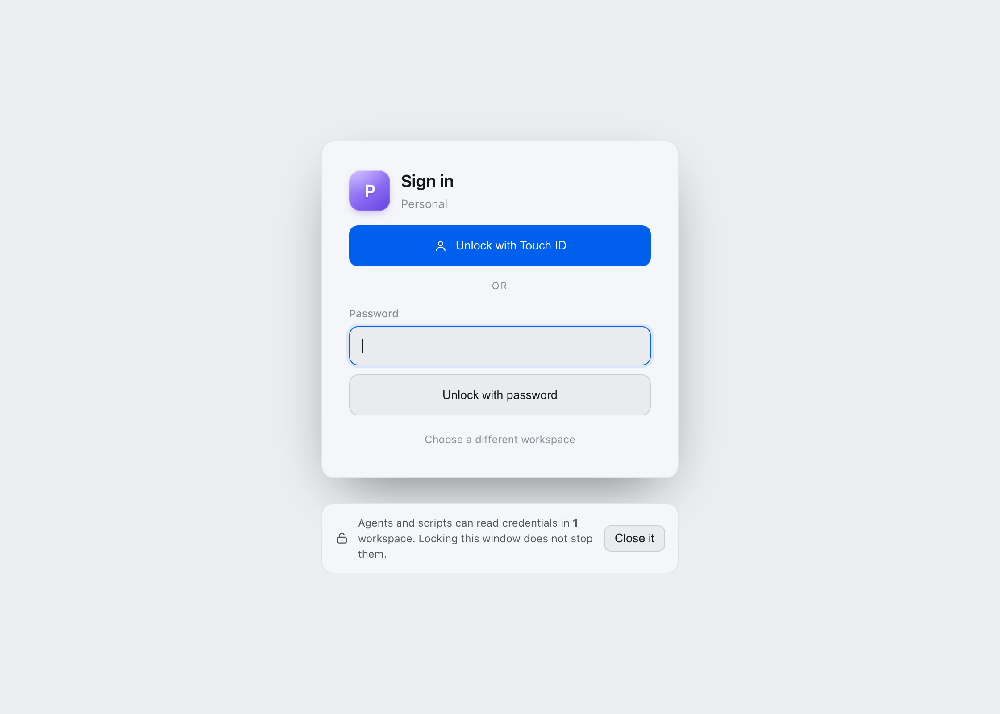
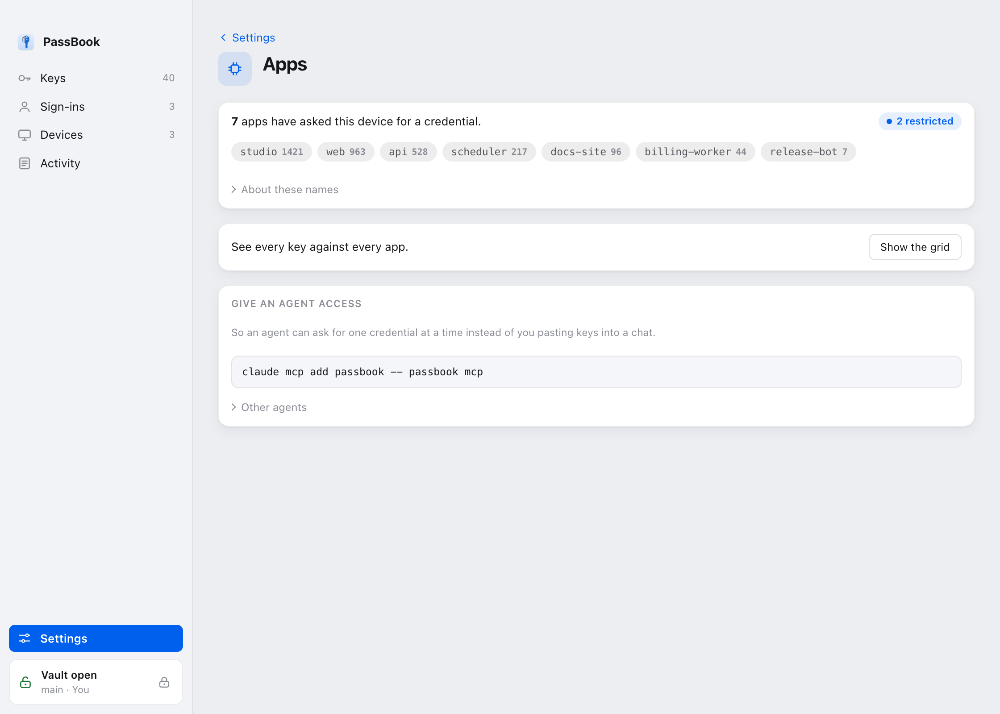
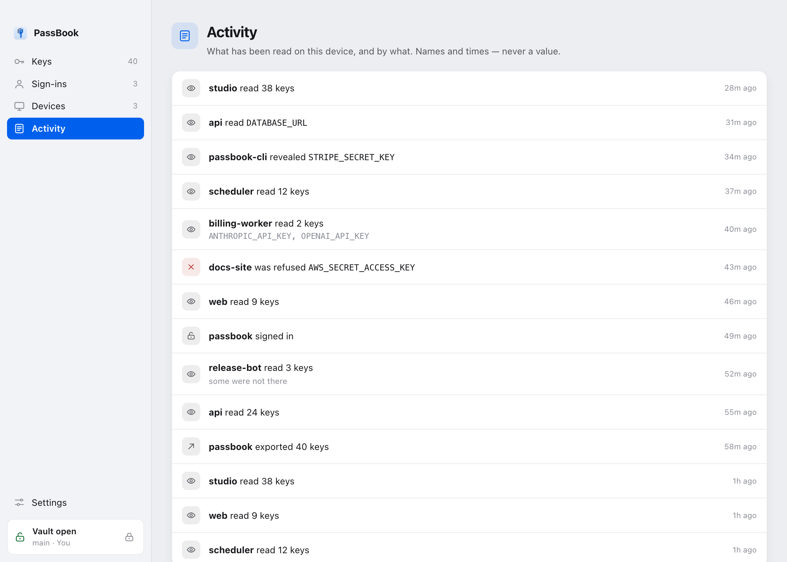

PassBook
One credential store per machine, shared by every app that opts in.
The idea
Ship three apps and you get three credential stores. The same OpenAI key gets pasted three times, revoked in one place, and still works in the other two.
PassBook fixes that by agreeing on a path instead of building a sync protocol. Every app resolves the same file by the same rule, so provisioning and linking are the same operation. The first app that needs credentials creates the store, and every app installed after it finds that file and adopts it. Nothing forks, so nothing has to be merged.
There is a desktop app and it holds no logic of its own. Every question it answers goes through the same command line an agent or a script would use. What you see in the window, you can do from a terminal.

The store is a default, never an override. A value exported into the
process, or set in the project's own .env, always wins. PassBook
fills in what is missing. It does not take anything over.
Install
Grab the app from
releases.
On Windows that is the whole thing. The installer brings its own Python and its
own copy of every passbook command, puts them on your PATH, and
takes them back off when you uninstall. Nothing needs to be on the machine
first.
For the command line on its own:
# macOS and Linux
./install.sh
# Windows
.\install.ps1It finds a Python, installs the commands, provisions the store, and prints
what it decided. Encryption and linking need cryptography, which is
not in the standard library, so setup provisions its own interpreter under
~/.hivemindos/passbook-runtime rather than touching a Python the
machine already relies on. No root, nothing broken.
If you already have uv:
uv tool install git+https://github.com/LiamVisionary/passbookThe name passbook on PyPI belongs to an unrelated project.
Install from the repository, not from PyPI.
Use it
import passbook
passbook.ensure(app="my-app", name="My App") # idempotent: creates or adopts
passbook.apply() # fill in what the process lacksimport { ensure, apply } from './passbook.mjs';
ensure({ app: 'my-app', name: 'My App' });
apply();Then read credentials from the environment as you already do.
For an app that should ask for what it needs rather than inherit everything:
key = passbook.request(["OPENAI_API_KEY"], app="my-app", reason="image render")Both read the same file today, so request grants no less than
apply does. The difference is that an app written against
request can be moved behind a broker that says no to a key it was
never granted. An app written against apply cannot.
On the command line
passbook-check OPENAI_API_KEY # set or missing, never the value
passbook-add OPENAI_API_KEY # prompts without echo
passbook-run -- npm run dev # run with the store loaded as a baseUse the bare passbook-add KEY prompt. A value typed as
KEY=value lands in shell history and is briefly visible to
ps.
Add to PassBook
Every API page ends the same way. Here is your key, now go and put it
somewhere. So you paste it into a .env, and that is how keys end up
in repositories.
A platform can hand it over instead. One button on the page that just minted the key, and it lands in your vault, sealed, without touching your clipboard.

You see who is asking, which keys, and which workspace. Nothing is stored until you say so and open the vault.
Putting the button on your page
<button id="add-to-passbook">Add to PassBook</button>
<script>
document.getElementById("add-to-passbook").addEventListener("click", async () => {
const request = {
app: "OpenAI",
note: "Read from the environment by the SDK",
keys: [
{ name: "OPENAI_API_KEY", value: theKeyYouJustMinted },
{ name: "OPENAI_ORG_ID", value: theOrgId },
],
};
async function hand(over) {
for (let port = 17817; port < 17826; port++) {
try {
const answer = await fetch(`http://127.0.0.1:${port}/ask`, {
method: "POST",
headers: { "Content-Type": "text/plain" },
body: JSON.stringify(over),
});
if (answer.ok) return true;
} catch { /* nothing listening on that port */ }
}
return false;
}
if (await hand(request)) return;
location.href = "passbook://add?app=OpenAI&key=OPENAI_API_KEY&key=OPENAI_ORG_ID";
setTimeout(() => hand(request), 2500);
});
</script>That is the whole integration. No SDK, no account, no key of your own.
Why the value does not travel in the link
The link exists to start the app, and it carries key names only. It is not a smaller version of the same thing.
A URL handed to an operating system's URL handler is not private. Windows passes it to the app as a command line, which any process on the machine can read, and the others log it. So values go over loopback in a request body instead. They never appear in a URL, an argument list, or a log.
The browser sets Origin, which means PassBook learns who is
asking from the browser rather than from the page's own claim. That is the one
part of a request a page cannot forge.
The value does not reach the window either. It stays in the app, and the
window is sent a preview like sk-pr…4f21, because a window is a
thing people screen-share.
| Field | What it is |
|---|---|
app | Your product name. Shown to the person as a claim, next to the origin the browser reported. |
note | One short line about what the keys are for. Optional. |
keys[].name | A plain environment variable: a letter or underscore, then letters, digits and underscores. At most 25 per request. |
keys[].value | The credential. One line, up to 8 KB. Leave it out and the person fills it in themselves. |
workspace | A suggestion. The window still defaults to the active workspace and the person can change it. |
Workspaces
A machine can hold several stores, and each one has its own key.
That second half is the part that matters. A workspace is not a folder. It is a set of credentials plus the thing that opens them, so picking a workspace and picking whose key you are holding is one decision, not two. Sign in to Personal and the Acme keys stay encrypted, on the same disk, in the same second.

passbook workspace # what is here, and which is active
passbook workspace use acme # switch
passbook signin --workspace acme # open that one, leave the rest shut
passbook signout --workspace acme # shut it, leave the rest openReads layer the machine store, then the workspace store, so a workspace inherits the machine's keys and a more specific value wins. Writes go to the workspace. That is the half people get bitten by. A key added while you are scoped to a client's workspace must not appear machine wide.
Set "inherit": false to cut the machine store out entirely. Use
it for anything holding someone else's credentials. Siblings never see each
other either way.
Encryption
Sealing turns every value into ciphertext at rest. The store is still one file in one place, and it is unreadable until something signs in.
passbook secure # seal it, and set up a way back in
passbook seal # seal under the active profile
passbook unseal # undo itYou can leave specific keys readable on purpose with
--skip, which is for the feature flags an app reads before anyone
has signed in.

Signing in
A password, a passkey, or the device itself. Touch ID and Windows Hello count as the device factor.

passbook signin # password
passbook signin --passkey ID # passkey, PRF secret on stdin
passbook signin --device # this machine's device factor
passbook signin --for 8h # how long to stay open
passbook signoutA sign-in is held by the broker, not by your shell. It survives the terminal that started it and expires when you said it should.
Who can read what
Every key has a mode, an audience, and a scope. An app gets what it was granted and nothing else.

passbook access # the grid
passbook scope KEY --projects a,b # narrow a key to named projects
passbook policy --learn # build a policy from what apps actually asked forWrite the policy from what happened rather than from imagination. Run in
audit mode, let it record, then turn what it saw into a starting
policy. Policies written from a blank page are how things end up permanently in
audit mode.
The broker
The broker is one door for credential reads, and a complete record of them. It is optional. Everything works without it, and it closes the holes in the audit trail.
Without a broker, each app opts into stamping its own reads. A vendored
passbook.py in somebody else's project does not, so the ledger has
holes shaped exactly like the apps least likely to be careful. The broker stamps
every request it serves either way.
passbook broker start
passbook broker status
passbook broker stopIt speaks over a Unix socket on macOS and Linux, and a named pipe on Windows, restricted in both cases to the account that created it.
Read this before you trust it. A process running as you can connect and claim to be any app it likes. Nothing in the request proves otherwise. So do not read "denied" in the ledger as "an attacker was stopped". What the broker buys you is that the audit stops being voluntary, and that honest code gets least privilege.
Activity
Every read lands in a hash chained ledger. You can see what asked for what, when, and whether it was granted.

passbook history # what happened
passbook state # the whole picture as JSON
passbook check KEY # set or missing, never the valueAgents
Agents are the reason this exists. They run commands, they need credentials, and they should not be handed the whole environment.
claude mcp add passbook -- passbook mcpOver MCP an agent asks for a named key and gets that key, recorded, or a refusal. It never implements token refresh, and it never sees the rest of the store.
Backup
passbook export --out backup.json # sealed, portable
passbook import backup.json
passbook recovery # a code that gets you back inMake the recovery code before you need it. That is the entire advice.
Command reference
Every verb is also available hyphenated, so passbook add and
passbook-add are the same command. That matters for shell scripts
and for agents that prefer one binary per action.
| Command | What it does |
|---|---|
status | Where the store is, how many keys, whether it is sealed |
check | Whether a key is set. Never prints the value |
add / remove / delete | Change what is stored |
get / reveal | Read one value, recorded |
list | Key names, not values |
run | Run a command with the store loaded as a base |
secure / seal / unseal | Encryption at rest |
signin / signout / lock / unlock | Open and shut the vault |
profile / passkey / recovery | Ways back in |
workspace / projects / scope | Which store, and how narrow |
access / policy / apps / agents / approve / confirm | Who may read what |
broker | Run the door that records reads |
history / state / matrix | What happened, and what is true now |
oauth | Grants that know how to refresh themselves |
mcp | Serve the store to an agent |
export / import / sync / link | Move a store between machines |
install / forget / group | Set up, and tidy up |
Run passbook <command> --help for the flags. The help is
generated from the parser, so it cannot drift from what the command accepts.
What it does not claim
PassBook does not stop malware. A process running as you can read the store file directly, and stopping the broker restores full access. What it does is make reads recorded and narrow. It does not make unauthorised reads impossible.
It is not a secrets manager for a fleet of servers. It is for the machine in front of you and the apps and agents running on it.
Sealing protects the file at rest. It does not protect a value once an app has been granted it and loaded it into memory.
Being clear about this is the point. A tool that oversells what it stops is a tool people trust in situations it was never built for.